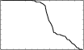
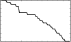
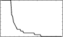
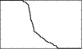
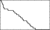
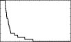

APIO Home | 2007 Tasks and Data
Congratulations to everybody who entered the first ever Asia-Pacific Informatics Olympiad on 12 May 2007!
There was a fantastic turnout, with 359 participants from 14 delegations:
Australia India [*] Macau Sri Lanka Bangladesh Indonesia New Zealand [*] Thailand China Japan Philippines Chinese Taipei Korea Singapore
The top six competitors from each delegation become the official teams, who are eligible for awards. Please note that the delegations marked [*] sat the contest unofficially, which is why they do not appear in the awards table.
And, without further ado, the winners are:
Competitor Delegation q1 q2 q3 Total Gold Ge Fang China 100 100 100 300 Huayang Guo China 100 100 100 300 Mu Yang China 100 100 100 300 Yi Yang China 100 100 100 300 Jiangwei Yu China 100 90 100 290 Yihan Gao China 100 90 100 290 Silver Jae Hyun Park Korea 93 85 100 278 Soon Il Kwon Korea 100 65 100 265 Jae Hong Kim Korea 100 30 100 230 Jia-Han Chiam Singapore 100 95 35 230 Jong Hyuk Lee Korea 29 100 100 229 Chan Min Kim Korea 34 90 100 224 Doo Ho Jang Korea 100 90 30 220 Pai-Chang Ho Chinese Taipei 100 95 15 210 Mahbubul Hasan Bangladesh 96 85 25 206 Yuki Yoshida Japan 100 90 15 205 Toshiki Kataoka Japan 100 95 5 200 Bronze Tana Wattanawaroon Thailand 99 70 20 189 Chethiya Abeysinghe Sri Lanka 96 70 20 186 Sarun Gulyanon Thailand 100 65 20 185 Apiwat Chantawibul Thailand 98 85 0 183 Jarrah Lacko Australia 100 70 10 180 Phumchanit Watanaprakornkul Thailand 100 70 10 180 Saran Lertpradit Thailand 100 70 10 180 Zi Chun Koh Singapore 55 65 60 180 Chantat Eksombatchai
Nutthaporn Sethasathien
Taksapaun KittiakrastienThailand [**] 100
100
10055
65
6520
10
10175 Wei Quan Lim Singapore 100 70 5 175 Makoto Soejima Japan 100 65 0 165 Chi Wa Iao Macau 100 55 5 160 Wa Kai Wong Macau 100 50 5 155 Wei Zhong Lim Singapore 96 55 0 151 Shuhei Yoshida Japan 99 40 10 149 Alex Mathews Australia 100 35 10 145 Chih-Cheng Shih Chinese Taipei 30 60 55 145 Karol Danutama Indonesia 100 40 5 145 [**] Three students tied for the 6th place on the official team for Thailand.
The following graphs show the full distributions of scores for each problem. You may click on each graph to enlarge it.
Scores for the 66 official team members:
   1. Mobiles 2. Backup 3. Zoo Scores for all 359 participants:
   1. Mobiles 2. Backup 3. Zoo Some statistics:
- Of the 791 submissions received, there were 270 for Mobiles, 289 for Backup, and 232 for Zoo.
- 121 submissions used C, 363 submissions used C++, and 307 submissions used Pascal.
Congratulations again to everybody who sat the Asia-Pacific Informatics Olympiad 2007! We look forward to great things from the Asia-Pacific region in the IOI, and we will see you in Croatia!
— From the 2007 APIO Host Committee, Australia:
Alex Davies David Ananian-Cooper Mathias Hiron Ben Burton David Clark Patrick Coleman Bernard Blackham David Greenaway Ramana Kumar Clarence Dang James Curran Robbie Gates Jonathan Kummerfeld
{kind=link}
{kind=link}
{kind=link}
{kind=link}
{kind=link}
{kind=link}